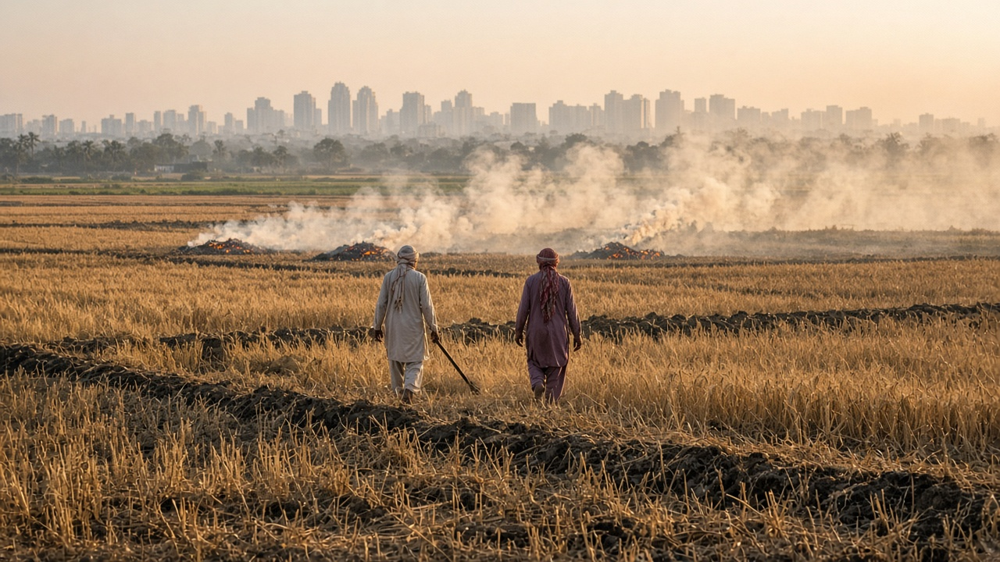
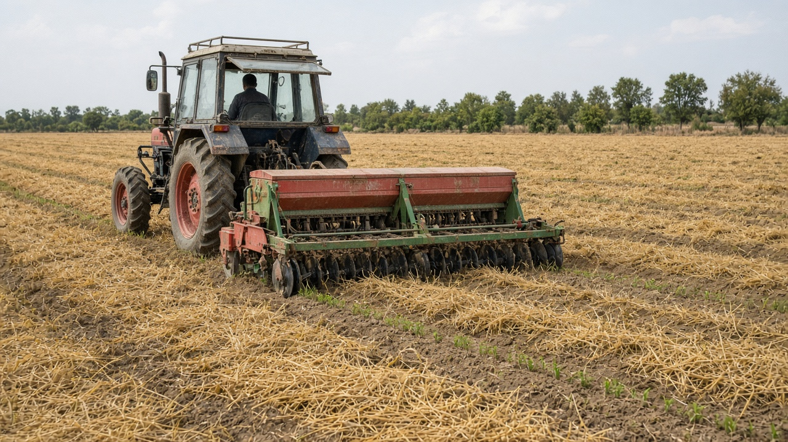
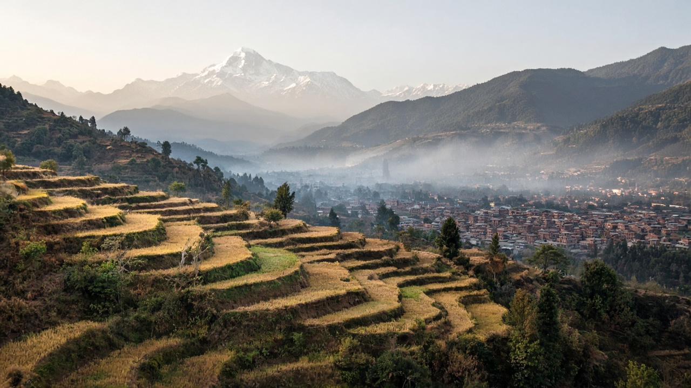

Agricultural Emissions and Open Burning
Published on August 20, 2026

Agriculture contributes to air pollution through multiple pathways beyond the familiar image of smoke from burning crop residues. Livestock production releases ammonia, methane, and nitrous oxide from manure management, enteric fermentation, and fertilizer application on pastures. Nitrogen fertilizers applied to cropland emit nitrous oxide and contribute ammonia that reacts in the atmosphere to form fine particulate ammonium nitrate and sulfate. Soil tillage and harvest operations suspend dust particles containing organic matter and pesticides. Post-harvest open burning of rice straw, wheat stubble, and sugarcane leaves remains widespread across South and Southeast Asia, generating intense PM2.5 plumes that degrade air quality in rural areas and downwind megacities during seasonal transition periods.
Open burning converts biomass into a toxic mixture of particulate matter, carbon monoxide, polycyclic aromatic hydrocarbons, and black carbon that harms respiratory health and accelerates glacier melt when deposited on snow. Farmers often burn residues because it is fast and cheap compared with manual removal or incorporation into soil, especially when planting windows are narrow between harvest and sowing. Alternatives include mechanical baling for bioenergy, mulching to improve soil moisture retention, and zero-tillage systems that leave residues on fields as protective cover. Happy seeder and super seeder technologies allow wheat planting directly into rice stubble without burning, demonstrating that productivity and clean air can coexist when equipment and extension services reach farming communities.
Policy responses combine enforcement of burning bans with incentives for sustainable residue management and improved agricultural practices. Satellite fire detection and ground patrols identify burning hotspots during critical harvest seasons, while subsidies on machinery reduce the economic barrier to non-burn alternatives. Precision agriculture that matches fertilizer application to crop needs cuts ammonia and nitrous oxide losses. Agroforestry and cover cropping build soil carbon while reducing dust emissions from bare fields. Regional cooperation matters because agricultural smoke crosses state and national borders freely, requiring coordinated action among Punjab, Haryana, Uttar Pradesh, and the Kathmandu Valley watershed to protect public health during autumn and spring burning seasons.

कृषिले बाली अवशेष दहनको धुवाँ मात्र होइन, धेरै मार्गबाट वायु प्रदूषणमा योग दिन्छ। पशुपालनले मल व्यवस्थापन, आन्त्रिक किण्वन र चरनमा मल प्रयोगबाट अमोनिया, मिथेन र नाइट्रस ऑक्साइड उत्सर्जन गर्छ। नाइट्रोजन मलले नाइट्रस ऑक्साइड उत्सर्जन गर्छ र अमोनियाले वायुमण्डलमा प्रतिक्रिया गरी सूक्ष्म अमोनियम नाइट्रेट र सल्फेट कण बनाउँछ। माटो जोताइ र बाली कटाइले जैविक पदार्थ र कीटनाशक भएको धुलो उडाउँछ। धान, गहुँ र उखु पात खुला दहन दक्षिण र दक्षिण-पूर्व एसियामा व्यापक छ, जसले ग्रामीण र टाढाका महानगरमा PM2.5 घना बादल सिर्जना गर्छ।
खुला दहनले जैविक पदार्थलाई PM2.5, कार्बन मोनोअक्साइड, बहुचक्रीय सुगन्धित हाइड्रोकार्बन र कालो कार्बनमा बदल्छ, जसले श्वासप्रश्वासमा हानि पुर्याउँछ र हिउँमा जमेको कालो कार्बनले हिमनदी छिटो पग्लन मद्दत गर्छ। किसानहरूले बाली सजिलो र सस्तोमा जलाउँछन् जब म्यानुअल हटाउने वा माटोमा मिसाउने भन्दा महँगो हुन्छ, विशेष गरी कटाइ र रोपाइ बीच समय कम हुँदा। विकल्पमा यान्त्रिक बन्डल, मल्चिङ र शून्य-जोत प्रणाली समावेश छ। ह्यापी सिडर उपकरणले धानको परालमा गहुँ रोपेर दहन बिना उत्पादकता देखाउँछ।
नीतिले दहन प्रतिबन्ध, प्रोत्साहन र सुधारिएको कृषि अपनाउँछ। उपग्रहले आगोको पत्ता लगाउँछ, मेसिनमा अनुदानले विकल्प सस्तो बनाउँछ। सातिक कृषिले अमोनिया र नाइट्रस ऑक्साइड घटाउँछ। कृषि वन र आवरण फसलले माटोमा कार्बन बढाउँछ र नाङ्गो खेतको धुलो कम गर्छ। क्षेत्रीय समन्वय आवश्यक छ किनभने कृषि धुवाँ राज्य र राष्ट्रिय सीमा नाघेर फैलिन्छ।

कृषि फसल अवशेष जलाने के धुएँ से कहीं अधिक मार्गों से वायु प्रदूषण में योग देती है। पशुपालन गोबर प्रबंधन, आंतरिक किण्वन और चरागाह में खाद प्रयोग से अमोनिया, मीथेन और नाइट्रस ऑक्साइड उत्सर्जित करता है। नाइट्रोजन खाद नाइट्रस ऑक्साइड उत्सर्जित करती है और अमोनिया वायुमंडल में प्रतिक्रिया कर सूक्ष्म अमोनियम नाइट्रेट और सल्फेट कण बनाती है। मिट्टी जुताई और कटाई जैविक पदार्थ और कीटनाशक वाली धूल उड़ाती है। धान, गेहूँ और गन्ने के पत्ते खुला दहन दक्षिण और दक्षिण-पूर्व एशिया में व्यापक है, जो ग्रामीण और दूरस्थ महानगरों में PM2.5 घने बादल बनाता है।
खुला दहन जैविक पदार्थ को PM2.5, कार्बन मोनोऑक्साइड, बहुचक्रीय सुगंधित हाइड्रोकार्बन और काले कार्बन में बदलता है, जो श्वसन को नुकसान पहुँचाता और बर्फ पर जमे काले कार्बन से हिमनदी तेज़ी से पिघलती है। किसान आसानी और सस्ते के लिए जलाते हैं जब मैन्युअल हटाना महँगा होता है, विशेषकर कटाई और बुआई के बीच समय कम हो। विकल्प में यांत्रिक बंडल, मल्चिंग और शून्य-जुताई प्रणाली शामिल हैं। हैपी सीडर उपकरण धान की पराली में गेहूँ बोकर दहन बिना उत्पादकता दिखाता है।
नीति दहन प्रतिबंध, प्रोत्साहन और सुधारित कृषि अपनाती है। उपग्रह आग की पहचान करता है, मशीन पर अनुदान विकल्प सस्ता बनाता है। सातिक कृषि अमोनिया और नाइट्रस ऑक्साइड घटाती है। कृषि वन और आवरण फसल मिट्टी में कार्बन बढ़ाती है और नंगे खेत की धूल कम करती है। क्षेत्रीय समन्वय आवश्यक है क्योंकि कृषि धुआँ राज्य और राष्ट्रीय सीमा पार करता है।